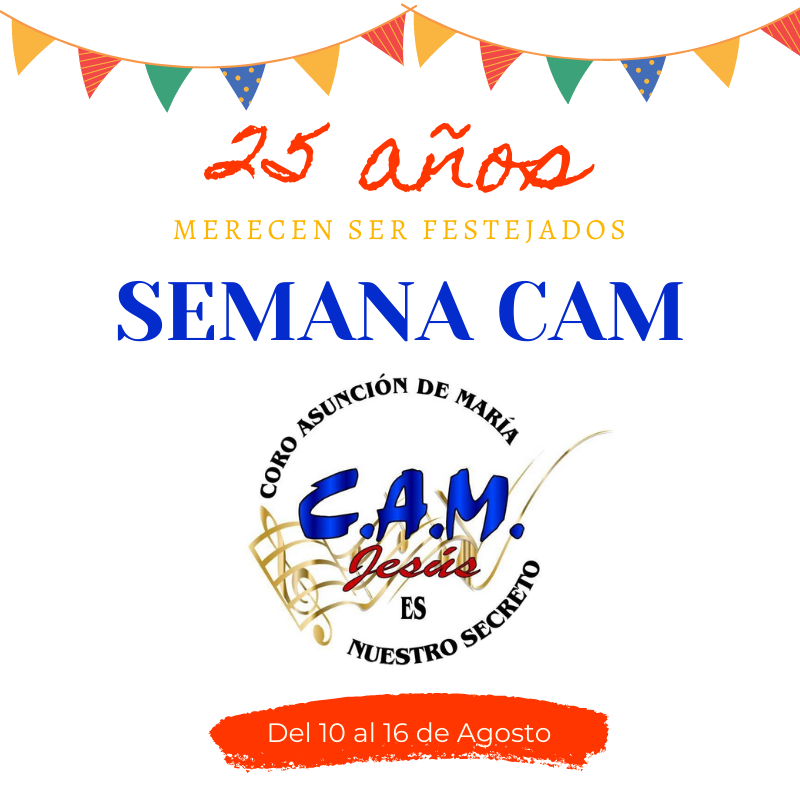
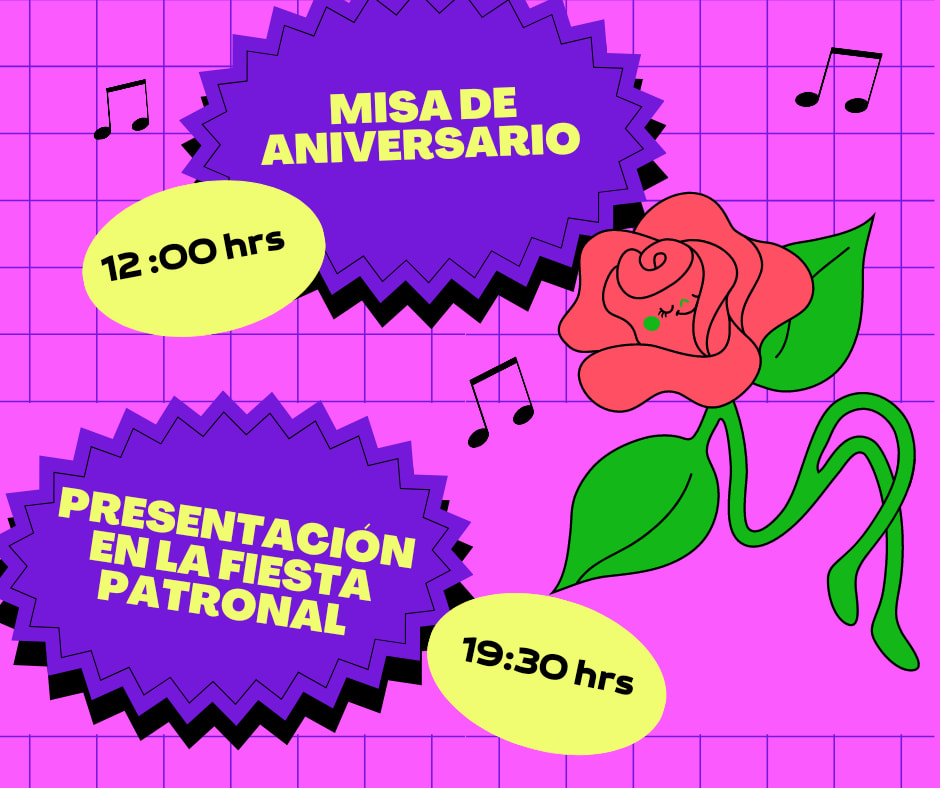
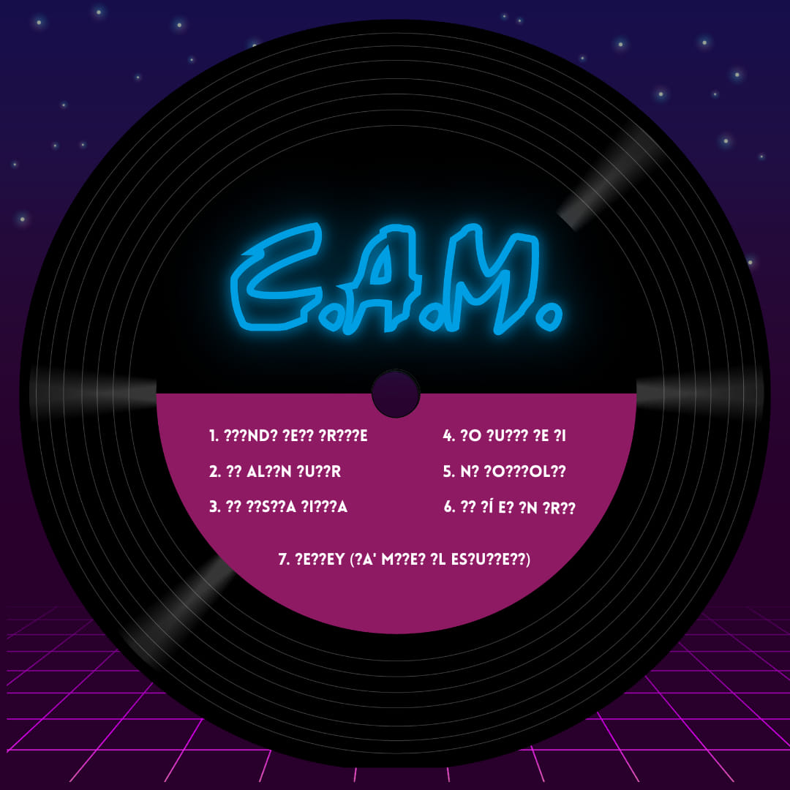
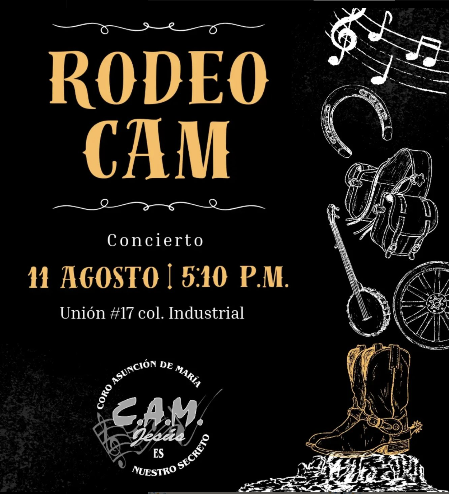

Parroquia Asunción de María
Industrial, Gustavo A. Madero, Ciudad de México
Industrial, Gustavo A. Madero, Ciudad de México
En agosto de 2020, el Coro Asunción de María festejó su aniversario número 25 de forma remota, recordando su historia a través de fotos y anécdotas.
El coro realizó un total de seis videos, presentados en una sección especial llamada "Semana CAM", ya que cada día, durante una semana, se fueron publicando estos materiales.
Cinco de ellos fueron elaborados en intervalos de cinco años, recopilando fotos y videos de distintas épocas. En estos videos, algunas personas que formaron parte de CAM durante esos años compartieron sus experiencias, recuerdos y aprendizajes, así como sus vivencias con los coordinadores de cada periodo. Como fondo musical, se utilizó el disco grabado por el coro con canciones para misa.
El sexto video tuvo un significado especial, ya que fue realizado por personas que, aunque no fueron miembros del coro, desempeñaron un papel importante en su historia: familiares, sacerdotes y personas clave que dejaron huella en su trayectoria.
En agosto de 2022, el Coro Asunción de María festejó su aniversario número 27 durante la fiesta patronal, acompañado de todas las personas que han compartido un momento con el coro.
El concierto fue un tributo a un ícono del Tex-Mex: Selena Quintanilla. Interpretaron varios de sus éxitos como:
El concierto cerró con una canción que ya es parte de la casa: "Que nos vaya bien" de Timbiriche.
En agosto de 2023, el Coro Asunción de María festejó su aniversario número 28 en la fiesta patronal de la parroquia.
El concierto llevó por título "Los 80's" e incluyó éxitos como:
Además, hicieron un popurrí con temas como: Ámame hasta los dientes, El final, Ahora te puedes marchar, El Noa Noa, Ya lo veía venir.
El cierre fue nuevamente con "Que nos vaya bien" de Timbiriche.
En agosto de 2024, el Coro Asunción de María festejó su aniversario número 29 en la fiesta patronal de la parroquia Asunción de María acompañado de todas las personas que han compartido un momento con el coro.
El concierto que dió el coro lo llamó "Rodeo CAM" en el cual, el grupo interpretó canciones con el estilo de jaripeo con canciones como:
-"Sentimental" de Joan Sebastian
-"El Príncipe" de Alicia Villareal
-"Un Millón de Primaveras" de Vicente Fernández
-"Golpes en el corazón" de los Tigres del Norte
-"Hermoso Cariño" de Vicente Fernández
y terminó con una canción que es de casa "Que nos vaya bien" de Timbiriche
En agosto de 2025, el Coro Asunción de María celebrará su 30 aniversario. Te invitamos a formar parte de esta gran celebración que se llevará a cabo el domingo 17 de agosto a las 5:00 PM.
¡No faltes! Será un evento lleno de música, recuerdos y comunidad.



